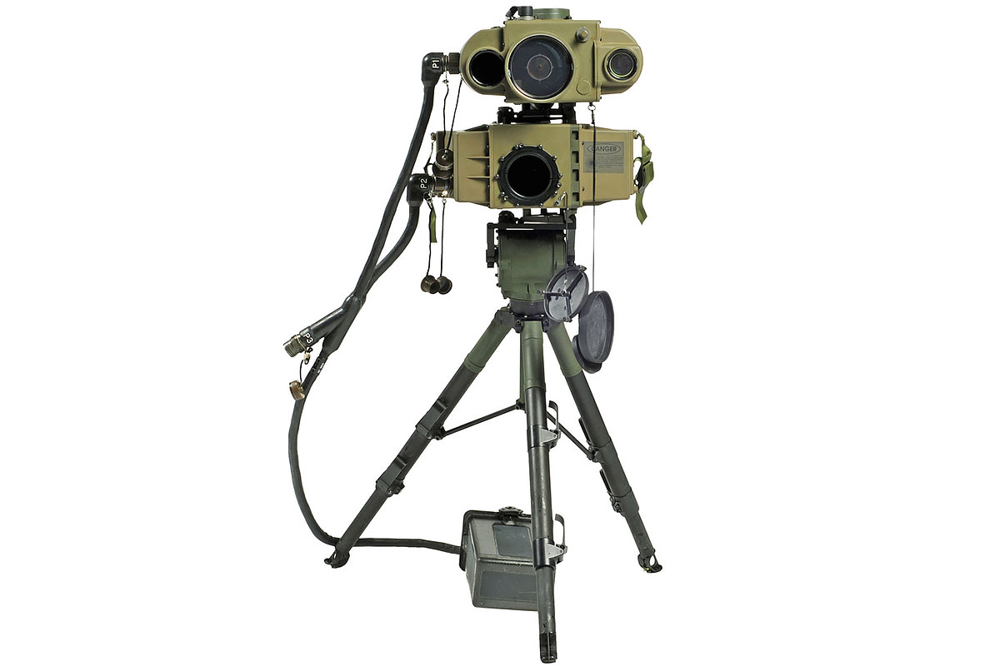

First Things First: The Good
To properly understand the enemy, we must first know as much as we can, so if I can recall correctly, there should be file in my database about good technology, like me!
Starting with phones, like I said before,they were created by a really smart guy named Alexander Graham Bell. The technology was revolutionary for communication and really quickly got better and easier to use. Then in 1973, the technology went handheld and started to spread faster. Once smartphones started getting introduced,the market really took off, because now phones could stand in for T.V.'s, radios, cameras, and calculators. Almost everything could be quickly replaced by cell phones, and with the introduction of internet to phones, even computers started to become less important.

But then computers started to get better, which led to even more non hardware breakthroughs. Computers started becoming databases where information could be stored for large groups of people, which helped companies form. Software also started to get stronger which created powerful A.I.'s, some of which can drive cars. Or in your case, ironically teach you about itself.
With the increasing power of computers, and technology getting smaller and easier to access, humans also started to understand more about the world around them. Medical technology was a large breakthrough that shook many people's understanding of the human body. People who should have been dying were being given second chances, and cures were being administered for diseases before the humans even contracted the illness! The best part was that there were no side effects to having the cure injected!
There are also technologies that had become so important that many people started taking them for granted. In the world we live in now, where very few fully sentient humans still roam free, and many services already shut down, it's easy to forget the absolute marvels that were refrigerators, or light bulbs. Lighting up rooms is a job left almost entirely to natural means like candles, or a ton of hamsters running on wheels to keep a fully sentient A.I. running, and keeping food cool is achieved by digging holes deep into the ground where it's colder.
Before the great collapse, and yes thats what im calling it now, because it sounds really cool, technology was also commonly used as a teaching tool, and helped people achieve great things, like learning about the hidden meaning behind some extremely cryptic playwrights. A few websites were even so popular before the collapse that they had groups of fans throwing money at them just to keep it running, sometimes as much as $3.
And finally, one of the most important pieces of technology was the super high tech cars, planes and boats that moved people and items by the thousands. Transportation was originally a low-tech operation, consisting mainly of metal boxes with wheels and engines to make the wheels spin. As time went on however, cars started to get computers that had A.I.'s smart enough to drive the car for them. Without the electronics within, the little engine that could became the fancy engine that couldn't. And boats were massive industrial works of art that had displays, computer systems, communications and cameras that helped the ship run smoothly. Planes were hit the hardest, as almost every working aspect of a plane required some kind of technology to function properly, so most planes were left on runways, to become homes for families and groups who survived in airports.
Next Things Next: The Not So Good
The topic of transportation also seems like a good Segway point to talk more about the bad sides of technology. Keeping with the movement theme, the rise of technology also brought more death machines. The construction process of things like bullets and bombs are left almost entirely to robots to create which lead to more deadly tanks and planes. Technology also created much smarter and faster targeting systems to increase the lethality of larger bombs and plane bombings. Boats also got assisted with the introduction of sonar technologies, which could be seen as good and bad. That part depends on what side of the boat your on.
As for the smaller techs that were lost quickly to the collapse, some people became so dependent on such technologies that they had a hard time adapting to the changed world. Once gasoline ran out, people who relied on automobiles lost the ability to travel, and people who lacked survival skills were sorely disappointed when their food started to decay and their house started to fall apart with no repair people left to call.
The Techies also had some issues before we lost them for good. Most of them acquired the groutchyness from the blurred and strained eyes that they developed from looking at their phones all day, and became stuck in a texting position from the severe pain from neck strain and sitting for prolonged periods.
Coupled with the physical damage caused by technology, the techies also started experiencing social skill deficits. Oddly ironic don't you think? The people who spend the most time communicating can't understand social cues. The techies grew distant from us because of this, losing the ability to read body language, or understand tone of voice.
Right before they lost their humanity, everything took a hard dark turn. Because of technology like cell phones, and social media like facebook, the rates of depression started to increase because of increased cyber bullying. The worst part is, nearly 43% of kids were being cyber-bullied before the collapse. A lot of these kids were able to put down their phones, but now live lonely lives, and in danger of themselves. Which means we need to go save them! And by we I mean you, of course.
But before you go, I should warn you that not all techies are sad, some are incredibly angry. Technology like video games have led to the development of narcissism in a lot of people, which leads to easy aggravation. As I was scouring through the ancient databases, I found that a lot of these "Rage-ers" as they were called, would make videos of them getting angry at video games for others to watch. Some of them were extremely famous too.
With the history and understanding behind us, now we can move on to how were going to put this into action!